レクリエーション情報
本部主催「第4回ゴルフ大会」が開催されました
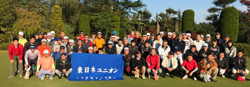
2017年10月26日、群馬県サンコー72カントリークラブにて、本部主催「第4回ゴルフ大会」が開催されました。大会当日は雲一つない秋晴れとなり、上州の山並みや色づく木々を眺めながら、深まる秋とともにゴルフを通じて組合員同士の交流を深めました。
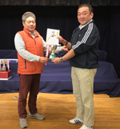
栄えある個人優勝には、東京地本の佐藤充さんが輝きました。
団体優勝は仙台地本が接戦を制して獲得しました。
準備を担って頂いた、新潟地本と高崎地本の皆さん、ありがとうございました。参加された皆さんお疲れ様でした。
関東ブロック交流「地引網」盛大に開催
2017年6月24日、関東ブロック交流「地引網」が茨城県大洗サンビーチで開催されました。
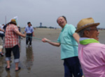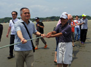
関東ブロック各地本から組合員、家族が集まり、力を合わせて網を引き上げました。そのあとは、お肉と野菜盛りだくさんのバーベキューでお腹を満たし、交流を深めました。
参加された皆さんお疲れ様でした。準備していただいた水戸地本の皆さん、ありがとうございました。
東京地本・大宮地本合同ゴルフ大会開催
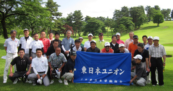
2017年6月6日、宇都宮カンツリークラブにおいて大宮・東京地本合同ゴルフ大会を開催しました。
今年も快適な天候に恵まれ、秋田地本、仙台地本、八王子地本そして本部から参加していただき盛大に開催することができました。優勝は大宮地本の前田さん、ベスグロは東京地本の狩谷さんでした。
参加された皆さんお疲れ様でした。また来年も頑張ってください。
東京地本ボウリング大会開催
2017年5月27日、東京地本は第4回地本ボウリング大会を池袋ハイパーレーンにおいて開催しました。
大会には20名あまりの組合員が参加し、硬軟織り交ぜたテクニックで、和やかな中にも真剣な対戦が繰り広げられました。
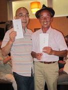
結果は、東京駅（エルダー）の中村さんと東京総合車両センター（エルダー）の伊藤さんが同点で１位となりましたが、優勝をかけた”じゃんけん”の結果、伊藤さんが見事優勝の栄冠に輝きました。
参加された皆さん、お疲れ様でした。
第3回本部ソフトボール大会開催
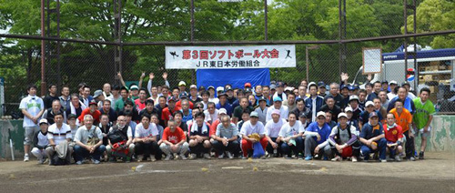
2017年5月12日、本部主催第3回ソフトボール大会が開催されました。会場の大井ふ頭中央海浜公園スポーツの森には東日本各地から精鋭？が集まり、熱戦が繰り広げられました。
東京地本は八王子地本との合同チームで臨みましたが、残念ながら２戦２敗に終わってしまいました。参加された皆さん、お疲れ様でした。
本部主催「第3回ゴルフ大会」が開催されました
2016年10月20日、高崎市サンコー72カントリークラブにて、本部主催「第3回ゴルフ大会」が開催されました。素晴らしい秋空のもと交流を深めつつ楽しくプレーしました。
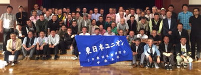
個人優勝は仙台地本の佐藤さん、団体優勝は新潟地本チームでした。昨年個人優勝を果たした東京地本の狩谷さんは、81でべスグロを受賞しました。参加された皆さんお疲れ様でした。
仙台地本主催「第2回団結芋煮交流会」開催！
2016年10月5日、山形市馬見ヶ崎河川敷において「第２回団結芋煮交流会」が仙台地本の主催・準備で開催されました。
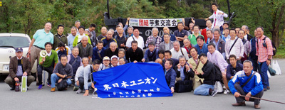
当日は台風が接近中で天候が心配されましたが、穏やかな天気のなか各地方から集まり交流を深めることができました。東京地本からは３名が参加してきました。準備していただいた仙台地本のみなさんには大変お世話になりました。
東京地本・大宮地本合同ゴルフ大会終了
2016年6月10日、栃木県宇都宮カンツリークラブにおいて、東京地本・大宮地本合同ゴルフ大会を開催しました。本部と秋田地本からも参加いただき、和気あいあいとした中にも真剣に、優勝を目指して熱戦を繰り広げました。
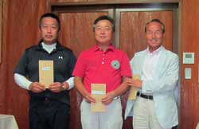
アテスト後に表彰式が行われ、狩谷孝さん（東京地本）が見事優勝に輝きました。準優勝は鎌田さん（秋田地本）、三位には中村さん（東京地本）という結果でした。
参加されたみなさん、お疲れ様でした。
関東ブロック「潮干狩り」大盛況に終了
2016年6月4日、千葉県木更津市の牛込海岸にて関東ブロック「潮干狩り」が開催されました。
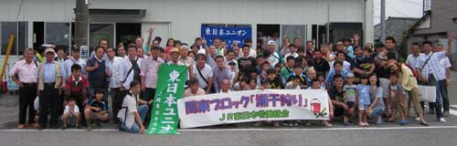
関東各地から約200名の組合員・家族が集まり、絶好の潮干狩り日和のもと童心に返ってアサリをとりながら、交流を深めてきました。
参加された皆さん、お疲れ様でした。準備をしていただいた千葉地本の皆様、ありがとうございました。
地本ボウリング大会成功裏に終了
2016年5月28日、池袋ハイパーレーンにおいて東京地本ボウリング大会を開催しました。本部から渡辺委員長と三島書記に参加いただき、総勢30名で熱戦を繰り広げました。大会は一人2ゲームの合計点で競いました。
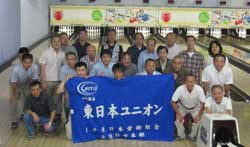
ゲーム終了後、場所を移し懇親会と表彰式を行いました。
優勝の栄冠には中村民雄さん（エルダー・東京駅）が見事輝きました。東京総合車両センター分会のV3が注目されましたが、残念ながら達成は成りませんでした。
参加された組合員の皆さん、お疲れ様でした。また来年も優勝を目指して奮闘しましょう。
第2回本部ソフトボール大会開催
2016年5月13日に、東京都・大井ふ頭中央海浜公園スポーツの森において「第2回本部ソフトボール大会」が開催されました。
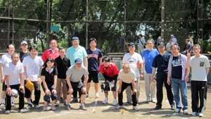
日ごろの運動不足でなまった体にむち打ち、ハッスルプレーで盛り上がりました。東京地本は2試合を行い、"秘密兵器"の活躍もあり1勝1分けの成績でした。
交流会では各地本のMVPが選出され、東京地本からは"秘密兵器"が選出され商品をゲットしました。参加された皆さん、お疲れ様でした。